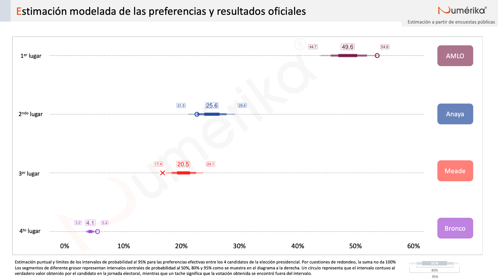
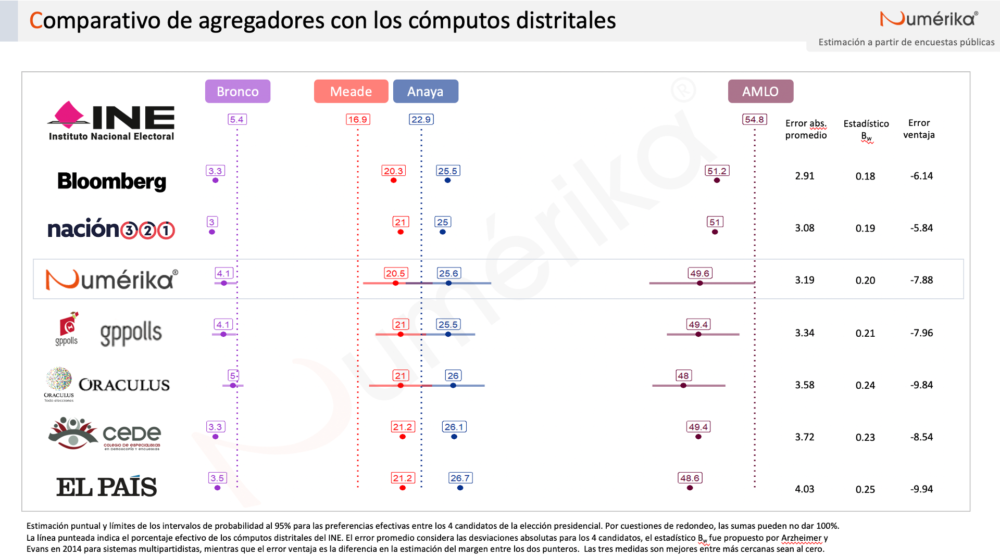
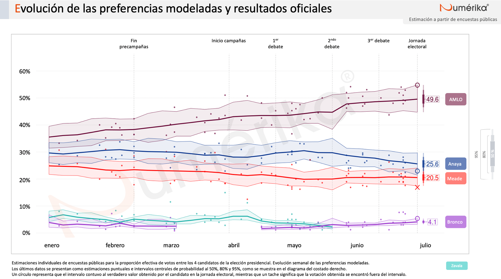
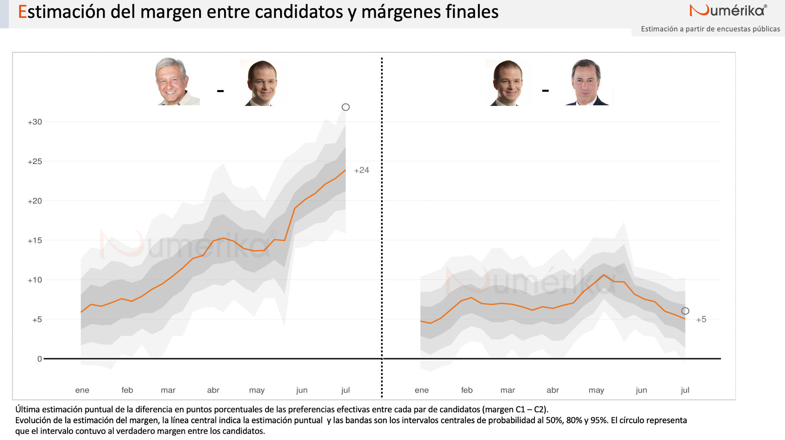

{{< /marginnote >}}
{{< /marginnote >}}
En esta página encontrarás información sobre el modelo de agregación de encuestas que desarrollé para Numérika durante la elección presidencial de 2018 en México.
A lo largo de un proceso electoral, las diferentes casas encuestadoras y campañas de los candidatos realizan encuestas con el objetivo de obtener información sobre el estado de las preferencias de los votantes. Debido a la volatilidad natural de las encuestas, en los últimos años han cobrado relevancia los modelos de agregación de encuestas, conocidos como Poll of Polls. Uno de los principales atractivos de estos modelos es que, al considerar varias estimaciones individuales, utilizan una mayor cantidad de información. Asimismo, permiten realizar estimaciones más estables pues tratan de separar el ruido estadístico de la tendencia real. De manera particular, el modelo aquí presentado busca reflejar la incertidumbre existente sobre la intención de voto presidencial en cada semana previa a la jornada electoral, agregando los resultados de las encuestas publicadas por distintos medios electrónicos y escritos desde enero de 2018.
Considerando el objetivo de agregación de encuestas, podemos pensar que necesitamos un modelo que contemple los siguiente supuestos:
En cada punto en el tiempo existen unas preferencias subyacentes entre los votantes que determina- rían el resultado de la elección, si esta se realizara en ese momento.
Cada encuesta busca estimar dichas preferencias pero, debido a errores muestrales y no muestrales, el dato obtenido es una desviación de las mismas.
Dicha desviación depende, primordialmente, de la casa encuestadora que realizó el ejercicio demos- cópico a través de dos fuentes independientes:
La metodología específica seguida por nuestro modelo Numérika se puede consultar al final de esta página. Pero antes, vale la pena observar los resultados del modelo.
En esta sección comparto los resultados de la estimación final antes de la jornada electoral, comparados con el cómputo oficial. No sin sorpresa, el modelo colocó de manera correcta el orden de los cuatro candidatos. Lo que sí vale la pena destacar es que el modelo capturó los verdaderos resultados obtenidos por 3 de los 4 candidatos, errando solamente en la estimación de Meade.

Podemos entonces hacer un comparativo con el resto de modelos de agregación de encuestas que fueron recopilados por el sitio Oráculus a lo largo de la campaña. Como puede apreciarse, no todos los agregadores presentaron estimaciones por intervalos. Entre los 3 modelos que sí reportaron incertidumbre mediante intervalos de probabilidad, el modelo de Numérika contemplaba rangos más amplios. Esto resultó acertado, en el sentido de que, todos los modelos subestimaron a López Obrador y sobrestimaron a Anaya y a Meade, pero los intervalos de Numérika sí lograron capturar 2 de estos 3 resultados. Ahora bien, las encuestas en general fueron acertadas, lo que permitió errores relativamente menores.

Si observamos la evolución de las estimaciones a lo largo de la campaña tenemos la siguiente gráfica:

Al respecto vale la pena hacer varios comentarios. En primer lugar, se puede observar que hay relativamente pocas encuestas publicadas. Durante los 6 meses de campañas, solo hubo 58 encuestas. Esto es considerablemente menor al volumen publicado, por ejemplo, en Estados Unidos, donde los modelos de agregación de FiveThirtyEight han sido muy exitosos.
También es importante señalar que hubo retos considerables cuando las circunstancias “alejaron” al modelo del “pizarrón”. ¿Qué hacer cuando el Bronco no junta firmas y algunas encuestadoras lo eliminan de sus estimaciones? ¿Cómo reintroducirlo al modelo cuando el Tribunal Electoral valida su candidatura? ¿Cómo reaccionar ante la declinación de Margarita Zavala? ¿Cómo tomar todas estas decisiones “en vivo”?{{< marginnote >}}Mi intención es complementar esta página con algunas de mis reflexiones al respecto, así como una exposición de las decisiones tomadas en su momento. Mientras tanto, si alguien tiene interés particular en estas preguntas, con mucho gusto puede contactarme.{{< /marginnote >}}
Un tercer punto a notar es que las últimas encuestas publicadas, los puntos en las gráficas, fueron bastante acertadas. Esto ayudó a que algunos de los modelos cuya unidad temporal fuera diaria,{{< marginnote >}}A saber, Bloomberg y Nación 321.{{< /marginnote >}} tuvieran un resultado ligeramente más preciso que aquellos que utilizamos unidades temporales mayores. Por ejemplo, Oráculus utilizaba los meses como unidades temporales y nuestro modelo semanas. En retrospectiva, creo que el utilizar semanas, mientras sigan existiendo pocas encuestas publicadas, es una buena decisión. Si las últimas encuestas publicadas no hubiesen sido las más precisas, es de sospechar, que los modelos diarios hubieran podido pagar el precio. Por otro lado, utilizar meses puede exponer a los modelos a reaccionar demasiado lentamente a cambios en la recta final.
Finalmente, quisiera decir que el modelo fue estimado vía MCMC con Stan. Esto permite contar con distribuciones posteriores para todas las cantidades de interés y no solamente para los porcentajes de cada candidato. Un estadístico importante puede ser la probabilidad de victoria. En esta ocasión, sin embargo, era totalmente claro que el ganador sería López Obrador. Por ello, más bien decido presentar otras dos cantidades posiblemente interesantes: los márgenes entre pares de candidatos. Como puede verse, a pesar de subestimar considerablemente el márgen de victoria de AMLO, el intervalo más amplio logró capturarlo. Esta subestimación puntual es consecuencia de la subestimación del voto por el tabasqueño que se presentó en general a través de todas las encuestas. Por otro lado, la estimación del margen entre los candidatos del PAN y del PRI fue bastante certera.

Hacia el futuro, será importante reflexionar e intentar mejorar el modelo. Existen distintas avenidas a explorar. Una podría ser considerar modos de levantamiento de las encuestas o quizás incorporar información sobre precisiones históricas de las casas encuestadoras. Asimismo, debe valorarse el aporte para la opinión pública de estos modelos de agregación de encuestas. En este sentido, los invito a ver el siguiente foro, organizado por Nación 321, en el que los distintos agregadores discutimos sobre el tema:
{{< youtube Wsqg95eC35M>}}
Tomando en cuenta los supuestos planteados, resulta atractiva la propuesta hecha por Cargnoni, Müller, y West (1997) para modelar series de tiempo multinomiales. Con base en lo expuesto por los autores de dicho trabajo, cada encuesta se modelará como una realización de una distribución multinomial con parámetros propios:
\[ Y_e \sim Mult(\theta_e, n_e). \] Los autores proponen lo que ellos llaman un modelo condicionalmente normal que modele el vector de probabilidades \(\theta_e\) mediante una transformación no lineal. En lugar de modelar directamente desde el simplex,{{< sidenote >}}Como hacen los modelos basados en distribuciones Dirichlet, por ejemplo.{{< /sidenote >}} se utiliza una transformación que permita “flexibilidad y libertad para describir patrones arbitrarios de correlación” (p.640, traducción propia).
Cada encuesta tiene asociada una medición latente \(\eta_e\) relacionada con las probabilidades multinomiales \(\theta_e\) mediante la transformación logística aditiva:
\[ \eta_{e,i} = ln\left(\dfrac{\theta_{e,i}}{\theta_{e,I}}\right) \quad \forall \; i=1, 2, \dots, I-1,\]
donde \(I\) es el número de candidaturas.{{< sidenote >}}Esta es una transformación diferente a la de seno inverso que utilizan Cargnoni, Müller y West en su aplicación, principalmente porque garantiza que el resultado sea un vector de probabilidades válido, lo que permite eliminar un paso de aceptación y rechazo a la hora de hacer las simulaciones para obtener la distribución posterior.{{< /sidenote >}}
Son estos parámetros transformados los que se modelarán de una manera jerárquica y dinámica que incorpora los supuestos antes enlistados. La medición, se asume, se distribuye de manera normal, centrada en una media que depende del nivel “real” del sistema en la semana de la encuesta (\(\mu_{t[e]}\)) y de los posibles sesgos constantes de la casa encuestadora \(\gamma_{c[e]}\); su varianza depende exclusivamente de un parámetro de dispersión de la casa encuestadora, \(V_{c[e]}\):
\[ \eta_e \sim N(\mu_{t[e]} + \gamma_{c[e]}, V_{c[e]}) \] La evolución del sistema depende del último punto en el tiempo, teniendo como origen una media inicial m:{{< sidenote >}}Cabe mencionar que la elección de este parámetro no influye de manera determinante en las estimaciones, pues los datos van dominando a la inicial. Sin embargo, por transparencia, reportamos que se utilizaron valores equivalentes a una distribución efectiva entre los candidatos con los siguientes porcentajes: Andrés Manuel López Obrador 35 %, Ricardo Anaya Cortés 30 %, José Antonio Meade 25 %, Margarita Zavala 5 % y Jaime Rodríguez “El Bronco” 5 %.{{< /sidenote >}}
\[\mu_t \sim N(\mu_{t-1},W), \\ \mu_0 \sim N(m, W). \]
Se requiere completar el modelo asignando distribuciones iniciales a los parámetros. Para no imputar, a priori, un sesgo determinado a ninguna casa encuestadora, se decidió que las distribuciones de los sesgos fueran normales centradas en 0:
\[ \gamma_c \sim N(0,\Omega_c) \quad \forall \; c=1, 2,\dots, C,\] donde \(C\) es el número de casas encuestadoras en muestra. A todos los parámetros de varianza les fueron asignadas distribuciones iniciales siguiendo la sugerencia de Cargnoni, Müller y West y mediante pruebas con datos de encuestas para las elecciones presidenciales en México de 2006 y 2012. De manera concreta, estas fueron distribuciones Wishart inversas con 6 grados de libertad y matrices de escala diagonales con elementos iguales a 0.05.
## Referencias
Cargnoni, Claudia, Peter Müller, y Mike West. 1997. «Bayesian Forecasting of Multinomial Time Series through Conditionally Gaussian Dynamic Models». Journal of the American Statistical Association 92 (438): 640-47.